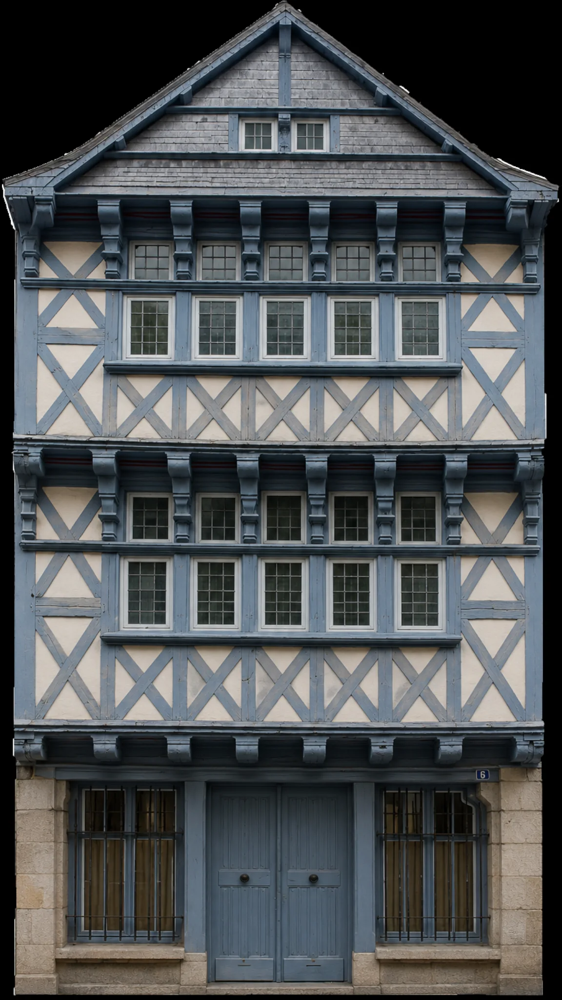
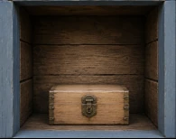
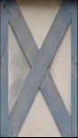

La cache secrète
Résous l’énigme pour découvrir ce qui se cache derrière la croix située au bas de la façade.



Quel roi légendaire est associé à la ville d’Ys ?

Un coffre oublié
Derrière la façade se trouvait un coffre soigneusement dissimulé.